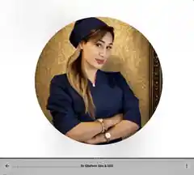

دکتر نیلوفر غفوری
طراحی هویت دیجیتال، وبسایت پویا و معماری سئو برای تبدیل یک برند فعال اینستاگرامی به مرجع قابل جستوجو در گوگل.

پایه پروژه
اطلاعات مشتری و وضعیت امروز
اعداد بالا بر اساس پروفایل فعلی اینستاگرام ثبت شدهاند. آدرس دقیق مطب، شماره نظام پزشکی و اطلاعات حرفهای تکمیلی باید قبل از انتشار نهایی سایت تأیید شوند.
معماری محتوا
خدمات قابل تبدیل به صفحات سئو
لب روسی، Kiss Lip، فیلر لب، گونه، چانه، خط خنده و زیر چشم.
زاویهسازی، کانتورینگ چهره، فیلر بادی و اصلاح تناسبات.
بوتاکس، مزوژل، PRP/PRF، مزونیدلینگ، سابسیژن و جوانسازی.
درمان ریزش مو، کاشت مو، کاشت ابرو و پروتکلهای تقویتی.
لیزر موهای زائد با ساختار صفحه اختصاصی برای نواحی و پرسشهای پرتکرار.
لیفت با نخ، درمان غبغب و خدمات تکمیلی فرمدهی صورت.
فرصت رشد
تحلیل اولیه سئو
کرج → تهران
شروع از بازاری که حضور واقعی برند در آن مشخص است و توسعه تدریجی صفحات هدف برای تهران.
چهره و محتوای واقعی میتواند پایه اعتماد و E‑E‑A‑T باشد.
هر درمان قابلیت تبدیل به صفحه جامع، FAQ و محتوای محلی دارد.
ساخت صفحات کرج و تهران با محتوای غیرتکراری و نیت جستوجوی واقعی.
انتقال اعتبار محتوای اجتماعی به دارایی قابل ایندکس و قابل اندازهگیری.
هویت بصری موقت
برندینگ نسخه صفر
کانسپت اولیه بر اساس تصویر واقعی؛ تا زمان طراحی نهایی هویت برند.
فارسی اول، انگلیسی در فاز بعدی
نقشه اجرا
از پروتوتایپ تا رشد ارگانیک
آدرس، مدارک حرفهای، شمارهها، ساعات کاری و خدمات نهایی.
لندینگ پویا، فارسی، موبایلفرست و آماده توسعه سئو.
ساخت صفحات مستقل برای هر خدمت و خوشههای کرج/تهران.
نمونهکار واقعی، پاسخ پزشکی، FAQ، مقاله و پروفایل حرفهای.
Search Console، آنالیتیکس، لینکسازی و بهینهسازی مستمر.
CTO / نسخهها
نسخههای سایت مشتری
لندینگ فارسی Motion
اولین کانسپت قابل مشاهده با تمرکز روی هویت برند، خدمات و تبدیل بازدیدکننده به تماس.
← مشاهده نسخهساختار کامل سئو
صفحات خدمات، FAQ، صفحات محلی کرج و تهران و دادههای ساختاریافته.
اتوماسیون و رزرو
فرم مشاوره، مسیر رزرو، گزارش لید و داشبورد عملکرد.